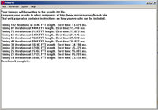

After you have set your intial baseline system configuration, you can start overclocking! Starting nudging the baseclock up by 5 Mhz intervals. For every 5 Mhz, you get a 60 increase on the CPU, and a small percentage increase to your RAM.
 The basic method of overclocking a computer is to overclock it component by component, and to have the other component running at lower speeds to rule out them as potential points of failure when your tweaking for an overclock. For instance, to isolate the CPU as a target for enhancing speed, you'll want to lower the inital speed of your HTT link, and your memory.
After you've made a significant jump in your baseclock. You should test your CPU for stability. Using tools like Prime95 for the CPU, and memtest86 for the system memory, the stability of your entire system can be profiled and benchmarked.
As a general rule of them, when you've come to what you think is a stable overclocked system, a test of Prime95 on test # 1 for 10 hours or more should be obtained. At least 50 passes on memtest86 will ensure your memory is running top-notch, and finally a 10 hour or more test of Prime95 on test # 3 will test both your CPU and memory.Basic Overclocking Procedure